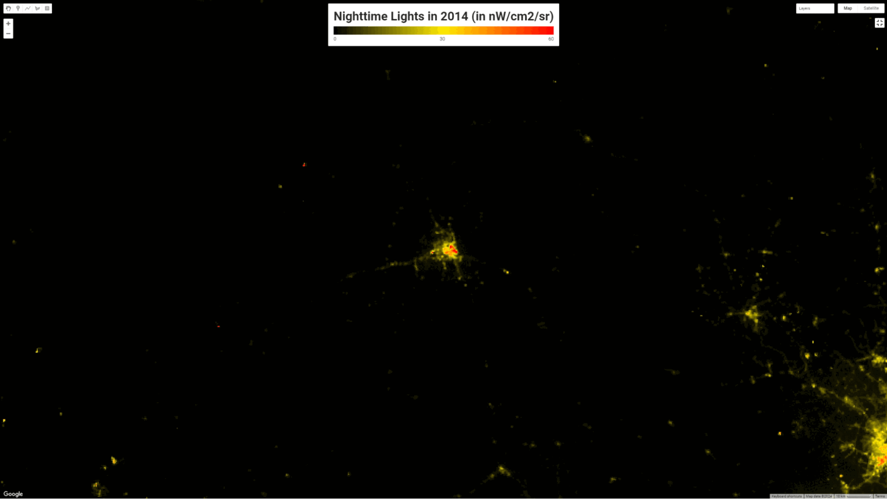

A useful tool for GIS is the possible change in satellite imagery. Once a image of a region is captured, that image is outdated. We can observed the changes a region has gone through by capturing the image of that region over a certain time period. The below image is a gif I made about the urbanization of Cambodia's capital city Phnom Penh from 2014-2023. It shows the urbanization through nighttime light over the years and how the city expanded.

Info:
This gif captures the nighttime light development of Phnom Penh, Cambodia from 2014-2023